Este é o sistema de controle da Gestor Engenharia — o mesmo que roda na duplicação da Av. Teotônio Vilela — agora na Ruas de Terra 4. Do apontamento no celular, dentro da vala, até a prévia da medição por item do orçamento: uma digitação só, um número só, a mesma verdade para o campo, o escritório e a fiscalização.
O serviço foi feito. O problema é provar, 45 dias depois, o que foi feito, quanto, onde e em que dia — com um caderno molhado, um grupo de WhatsApp com 400 mensagens e a memória de quem estava lá.
Pleito de prazo por chuva se ganha com prova. O sistema guarda, dia a dia, o clima apontado pelo turno e a chuva medida pela estação oficial do INMET, lado a lado, com o serviço que foi (ou não foi) lançado naquele dia. Isso é a tela Dias Improdutivos — e ela só existe se alguém preencher o RDO todo dia. É por isso que o apontamento diário não é burocracia: é o ativo mais barato que a obra produz.
Não há "sistema do campo" e "planilha do escritório". Há um lançamento só, feito uma vez, por quem viu o serviço acontecer. Todo o resto é consequência.
Cada um dos 56 serviços do orçamento vira um pacote na tela. O apontador não digita descrição de item nem código: escolhe a frente, escolhe o pacote e digita a quantidade que mediu com a trena.
Quem transforma "38,50 m de guia assentada" em quantidade de item contratual é a matriz de coeficientes, não o apontador. Ele erra menos porque tem menos o que decidir.
Cada linha guarda quem lançou e quando. Apagar só o administrador ou quem lançou — e a tentativa recusada fica registrada na Auditoria. A regra vale no servidor, não só no botão.
Cada pessoa entra com o seu usuário e vê apenas as telas do seu perfil. Ninguém precisa aprender o sistema inteiro — precisa aprender a sua parte, que é pequena.
Todo dia, no celular, na frente de serviço:
No escritório, acompanha e organiza — não lança serviço:
Responde pela obra: tudo o que os dois fazem, mais o que decide:
| Tela | Campo | Administrativo | Engenharia | Diretoria |
|---|---|---|---|---|
| Lançar Serviço · RDO Diário | lança | — | lança | — |
| Histórico | vê | vê | vê e corrige | vê |
| Painel Executivo · Cronograma | — | vê | vê | vê |
| Avanço Físico | vê | vê | vê | vê |
| Apoio à Medição | — | vê e exporta | fecha o mês | vê |
| Dias Improdutivos · Teórico × Real | — | vê | vê | vê |
| Equipamentos | aponta | aponta e cadastra | aponta e cadastra | — |
| Notas Fiscais · Estoque | lança | lança | lança | vê |
| Galeria de Fotos · Projetos | vê | vê | vê | vê |
| Analista IA | — | — | usa | usa |
| Usuários | — | — | — | — |
Só o perfil Administrador gerencia usuários — cria, troca senha, define o perfil e escolhe quais obras cada pessoa enxerga.
O administrador apaga qualquer registro. Todos os demais apagam apenas o que lançaram. A engenharia pode corrigir lançamento de terceiro (é ela que fecha a medição), mas não apagar. Esconder o botão não seria segurança: a regra é aplicada no servidor, e toda tentativa recusada vai para a aba de Auditoria com nome e hora.
leoribeiromac-cmyk.github.io/teotonio-vilela/
Não há loja de aplicativos, não há instalador, não há atualização para baixar. É um endereço — e ele está sempre na última versão.
Android/Chrome: menu ⋮ → Adicionar à tela inicial / Instalar aplicativo.
iPhone/Safari: botão Compartilhar → Adicionar à Tela de Início.
Instalado, o sistema abre em tela cheia, sem barra de navegador, e abre sem sinal. Quem usa pelo navegador perde metade da vantagem no canteiro.
No alto do menu lateral há o seletor Obra. Escolha Ruas de Terra 4. A escolha fica guardada no aparelho — só se troca de novo quando você quiser.
Botão Entrar, no rodapé do menu. Usuário e senha são os que o administrador criou para você. A sessão não expira sozinha: só sai quem clica em Sair.
Sem login o sistema abre em modo consulta (painéis e avanço). Lançar serviço, RDO, equipamento e nota exige estar identificado — é o que dá dono a cada registro.
No rodapé do menu: Claro (melhor sob sol forte), Escuro (turno da noite, barracão) ou Sistema. É por aparelho.
Clique em Atualizar quando não estiver no meio de um preenchimento. O sistema nunca troca de versão sozinho enquanto você digita — foi feito assim justamente para não perder um RDO aberto na tela.
Se o apontador fizer só isto, todo dia, o resto do sistema funciona sozinho: lançar os serviços, preencher o RDO Diário e apontar a hora das máquinas.
A data já vem preenchida com hoje. O nome fica gravado no aparelho — digite uma vez só.
A lista de pacotes só abre depois da frente — é o que evita escolher "Aterro" dentro de Drenagem. O nome do pacote já traz a rua: "Assentamento de guias — Agrimensor Sugaya".
Na unidade que aparece ao lado do campo (m, m², m³, un). Use vírgula: 38,50. Embaixo do campo o sistema mostra o saldo do pacote — quanto ainda falta — e avisa em vermelho se a quantidade passar disso.
Equipe/subcontratado identifica quem executou. A observação é onde vai o trecho: "da esquina até o nº 240", "lado par".
Tirar foto abre a câmera traseira direto. A imagem é reduzida no aparelho, sobe para a pasta privada da obra no Drive e fica amarrada àquele serviço e àquela data. Foto de obra mostra placa, rosto e endereço: por isso nunca vira link público.
Um botão adiciona a próxima linha. Cada linha vira um lançamento. Se o dia foi igual ao anterior, Copiar do último dia repete frente, pacote e equipe — só a quantidade fica em branco, de propósito.
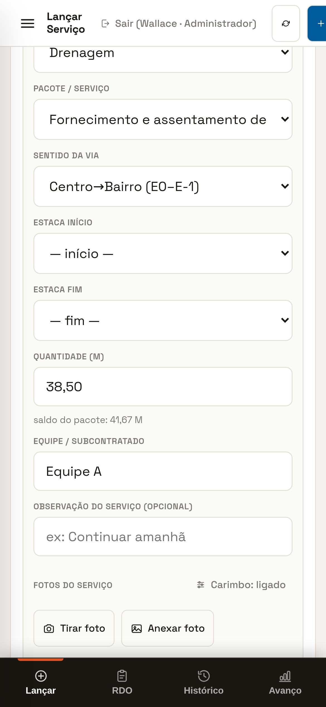
Lançar Serviço no celular exemplo
Repare no saldo do pacote logo abaixo da quantidade: 41,67 m restantes.
Esses três campos existem para a Av. Teotônio Vilela, que é numerada por estacas. Na Ruas de Terra 4 eles aparecem vazios e não devem ser preenchidos — a localização do serviço vai na Observação, e a rua já vem no nome do pacote. Deixe como está e siga para a quantidade.
O RDO Diário é o documento que a fiscalização assina. Ele é separado do lançamento de serviço de propósito: serviço é quantidade, RDO é o dia (quem estava, com o quê, sob que clima).
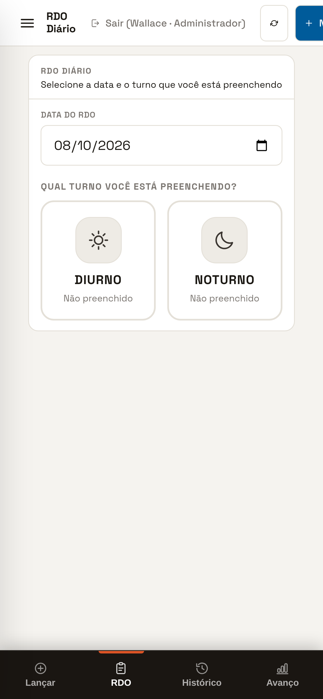
RDO Diário — escolha do turno exemplo
"Não preenchido" some assim que o turno é salvo.
Data, turno, operador, início e fim, paradas com motivo (que descontam da hora trabalhada), horímetro inicial e final, combustível e a assinatura do operador, colhida no dedo na própria tela. Hora de máquina é medição: entra em relatório e em cobrança de locadora — por isso cada apontamento registra quem lançou, e só o administrador ou quem lançou pode apagar.
Chegou material? Notas Fiscais → Nova nota fiscal → fotografar. O sistema lê a chave de acesso (do PDF ou do código de barras), busca os dados oficiais e abre a tela de conferência já preenchida. O que a leitura não teve certeza vem marcado em amarelo com "confira". Reenviar a mesma nota não dá entrada em dobro.
As pranchas do executivo abrem dentro do sistema, nunca no leitor de PDF do aparelho — abrir em app externo tira o apontador do sistema e, sem sinal, muitas vezes nem abre.
Na Ruas de Terra 4 estão publicadas as pranchas de pavimentação e drenagem das duas ruas: a lista mostra a disciplina e o código do carimbo, e o visor tem zoom (– / + / Ajustar), além de Abrir e Baixar o arquivo original.
Antes de discutir cota, espessura ou largura de passeio no rádio, abra a prancha. Ela está no mesmo aparelho em que você lança o serviço.
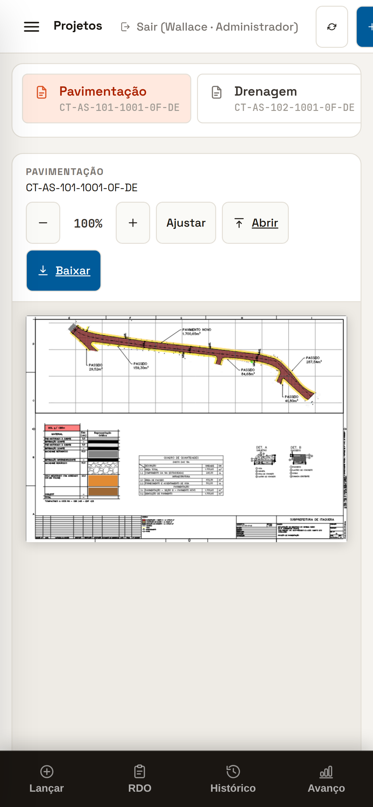
Projetos no celular — prancha CT-AS-101 (pavimentação da Agrimensor Sugaya), desenhada dentro do app.
O que você enviar sem internet fica numa fila dentro do aparelho — inclusive as fotos — e sobe sozinho quando a conexão voltar. Você vê o contador de pendentes na própria tela de lançamento. Não lance de novo "por garantia": o sistema reconhece o reenvio e não duplica. Só não desinstale o aplicativo com a fila cheia.
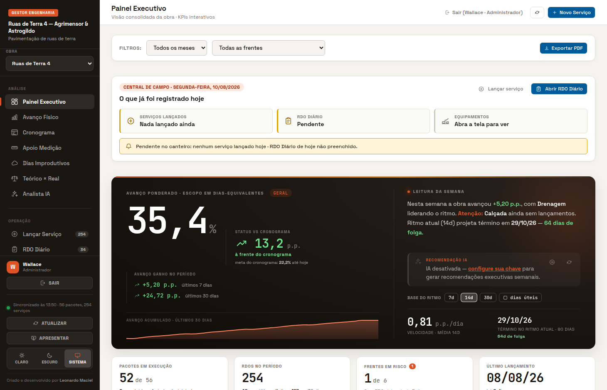
No alto do painel, fora dos filtros: é sempre hoje. Mostra o que já foi registrado no dia (serviços, RDO Diário, apontamento de equipamento) e o que falta.
É o item mais útil do dia para o administrativo: às 16h ele responde "quem ainda não lançou?". Sem isso, o RDO que ninguém preencheu só aparece semanas depois, quando não dá mais para lembrar.
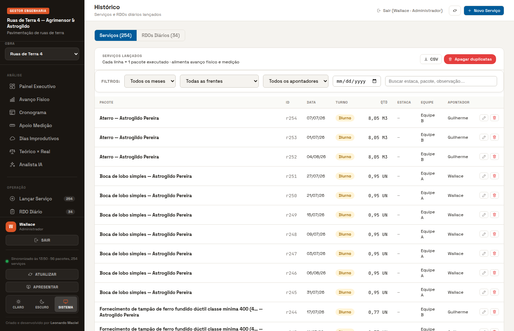
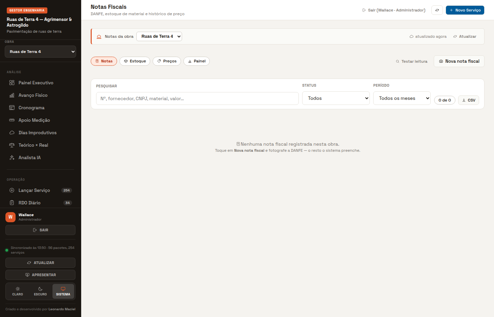
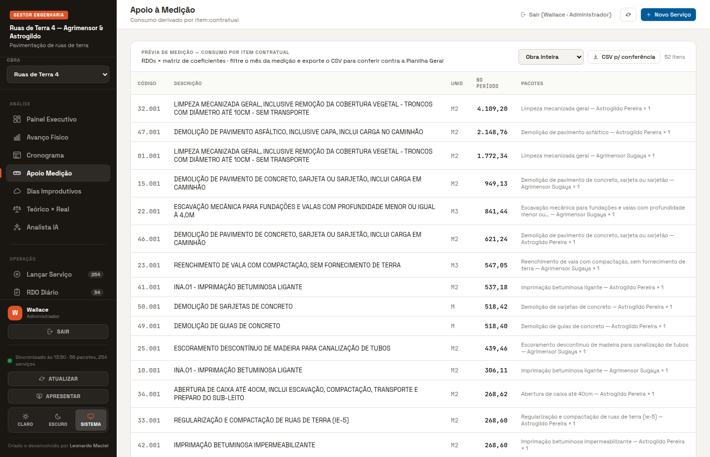
Escolha o mês → Fechar medição do mês. Isso congela o que foi apresentado à fiscalização. Lançamento retroativo continua sendo aceito depois — ele só deixa de reescrever o passado em silêncio, porque a tela passa a mostrar as colunas Medido e Diferença. Só engenharia e administrador fecham. Reabrir não apaga: marca como reaberto.
Com a quantidade contratual cadastrada, a prévia mostra o saldo e o % do contrato por item — e destaca o item que passou do contratado. Item acima do contrato pede aditivo, não medição: descobrir isso no dia 25 é diferente de descobrir na glosa.
Compara o consumo derivado dos coeficientes com a saída real do almoxarifado. Onde os dois se afastam há erro de apontamento, perda ou desvio — e é melhor saber pelo sistema.
A partir do término alvo, o sistema recua o saldo restante pela produtividade e diz quando cada pacote precisa começar e em que ritmo, contando só dias úteis. Ordena por urgência dentro de cada frente.
Resumo executivo da semana e recomendações, gerado com a chave que você configura em ⚙ Configurar IA. Sem chave, o sistema segue funcionando — só não escreve o resumo.
Botão APRESENTAR, no rodapé do menu. A obra vira uma sequência de telas grandes, em tela cheia, que passam sozinhas a cada 9 s (← → trocam, espaço pausa, ESC sai). Os números saem das mesmas funções do painel — não é um relatório à parte que possa divergir.
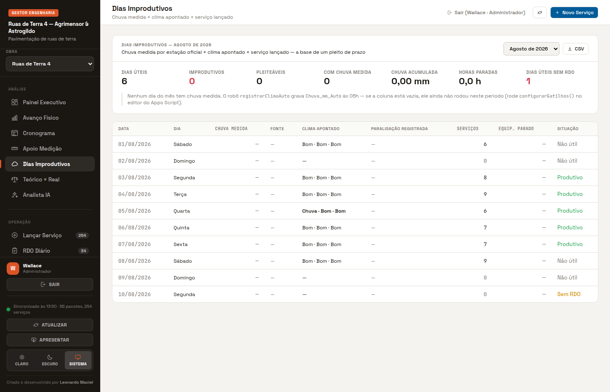
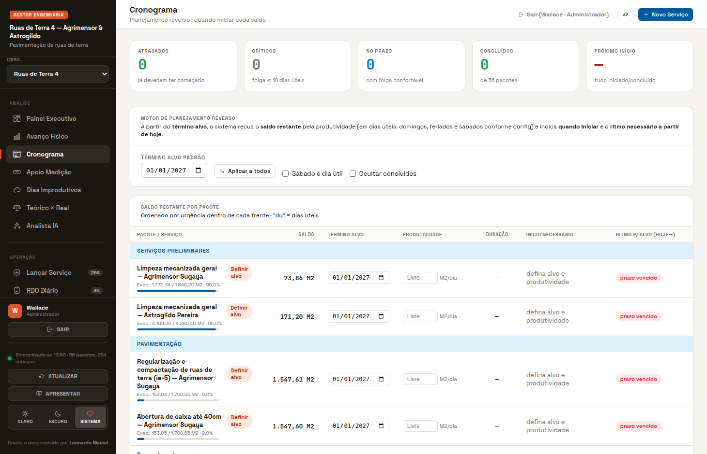
O menu é dividido em quatro grupos. Você só vê os itens do seu perfil.
| Tela | Para que serve | Quem mais usa |
|---|---|---|
| Painel Executivo | Como a obra está hoje: avanço ponderado, posição contra o cronograma, ritmo, projeção de término, frentes em risco e a Central de Campo do dia. | Administrativo · Engenharia |
| Avanço Físico | Avanço detalhado por pacote — executado, estimado, % e a data do último lançamento. É onde se vê o serviço parado. | Todos |
| Cronograma | Planejamento reverso: quando cada saldo precisa começar para caber no prazo. | Engenharia |
| Apoio à Medição | Prévia da medição por item do orçamento, saldo do contrato, CSV de conferência e fechamento do mês. | Engenharia · Administrativo |
| Dias Improdutivos | Chuva medida × clima apontado × serviço do dia. Base do pleito de prazo. | Engenharia |
| Teórico × Real | Consumo derivado dos coeficientes contra a saída de material do almoxarifado. | Engenharia |
| Analista IA | Resumo executivo e recomendações da semana. | Engenharia · Diretoria |
| Lançar Serviço | O que foi executado: frente, pacote, quantidade, equipe, observação e até 3 fotos. | Apontador |
| RDO Diário | O dia: efetivo, equipamentos, clima, paralisações e observações, por turno. | Apontador |
| Histórico | Tudo o que foi lançado, com filtros, busca, correção, exportação e o PDF do RDO oficial. | Todos |
| Equipamentos | Frota própria e locada, hora de máquina, paradas, horímetro, combustível e assinatura do operador. | Apontador · Administrativo |
| Galeria de Fotos | Registro fotográfico por pacote e por mês. Só abre as imagens para quem está logado. | Todos |
| Projetos | As pranchas do executivo abertas dentro do sistema, com zoom e leitura offline. | Apontador · Engenharia |
| Notas Fiscais | Entrada por foto da nota, estoque com lote, saídas, histórico de preço e divergências. | Administrativo · Apontador |
| Usuários | Criar pessoa, definir perfil, trocar senha e escolher quais obras ela enxerga. | Administrador |
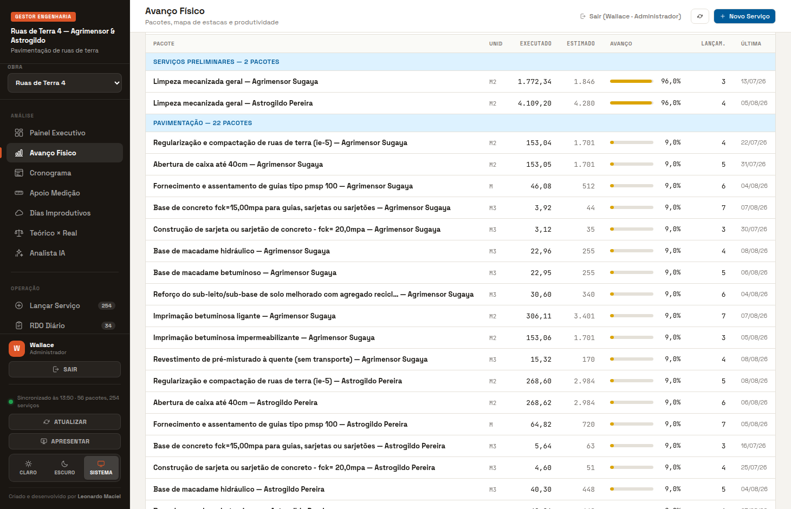
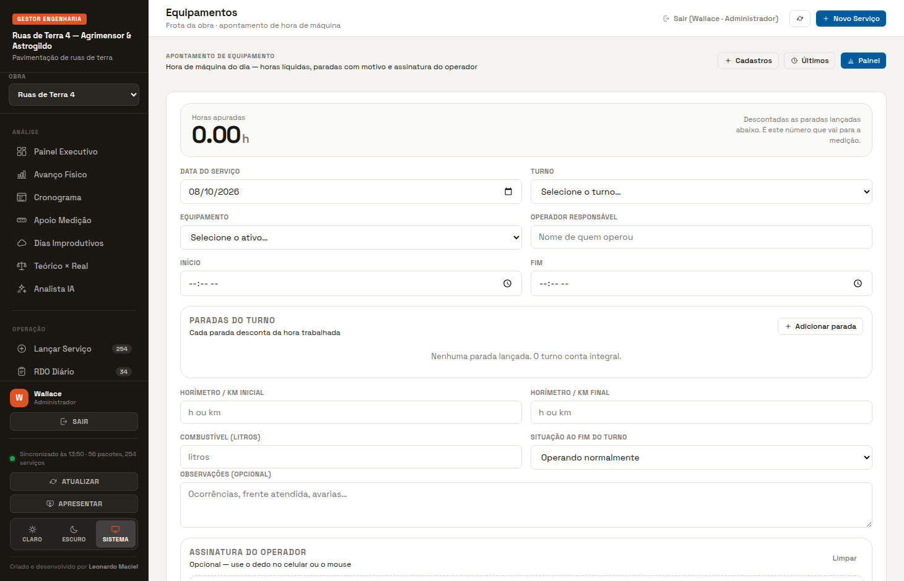
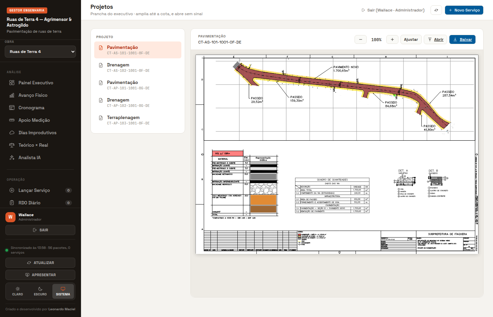
Quantidade lembrada de memória três dias depois é chute. Lançamento retroativo é possível — e às vezes necessário —, mas quem lança no dia mede com a trena, não com a lembrança.
Quantidade se escreve 38,50. O ponto é separador de milhar no formato brasileiro, e 22.26 pode virar 2 226.
Dois serviços diferentes no mesmo dia são duas linhas. Somar tudo numa linha só esconde qual frente andou.
Se o sistema avisar "acima do saldo do pacote", pare. Ou o pacote está errado, ou a quantidade tem um zero a mais — nas duas hipóteses a medição vai sair errada.
Dia de chuva sem RDO é dia perdido para o pleito. O dia parado precisa estar registrado com o motivo — é isso que a fiscalização aceita depois.
Serviço enterrado (fundo de vala, lastro, reaterro) só existe depois se tiver foto. São 3 por serviço, e elas ficam ligadas ao pacote e à data.
Errou a quantidade? Histórico → editar. Apagar e relançar quebra a rastreabilidade e, se a medição do mês já foi fechada, muda um número que a fiscalização já viu.
O nome que fica no registro é o do usuário que enviou. Login emprestado é registro com dono errado — e no RDO isso é assinatura de quem não estava lá.
| Aconteceu | O que fazer |
|---|---|
| Lancei no pacote errado | Histórico → localize a linha → editar → troque o pacote. Só o dono, a engenharia e o administrador conseguem. |
| Lancei duas vezes o mesmo serviço | Histórico → apagar a duplicata (você apaga o que você lançou). Se forem muitas, use Apagar duplicatas. |
| Enviei e não apareceu | Provavelmente está na fila offline. Verifique o contador de pendentes e a bolinha de sincronização no menu. Não reenvie. |
| "Sessão expirada" | Saia e entre de novo. O que estava digitado no rascunho de Lançar Serviço é restaurado. |
| "Seu acesso de Campo não abre esta tela" | É o perfil, não um defeito. Fale com o administrador se você precisa mesmo daquela tela. |
| O painel mostra número diferente do meu | Puxe ATUALIZAR no menu. O sistema recarrega a cada 5 minutos; o botão força agora. |
| Esqueci de lançar ontem | Lance hoje com a data de ontem. A data do lançamento é a que vale, não a de digitação. |
A obra já está cadastrada no sistema: 2 ruas, 6 frentes e os 56 serviços do orçamento com as quantidades previstas. Faltam quatro ajustes de cadastro — todos de escritório, nenhum de campo.
| O que falta | Por que importa | Quem faz |
|---|---|---|
| Usuários e perfis | Criar cada apontador, o administrativo e a engenharia, com perfil correto e acesso à obra Ruas de Terra 4. Sem isso ninguém lança. | Administrador |
| Matriz de coeficientes | É o de-para entre pacote executado e item do orçamento. Enquanto estiver vazia, o Apoio à Medição abre sem nenhuma linha. Nesta obra a matriz é quase 1:1 — cada serviço do orçamento é um pacote —, então é um cadastro rápido, mas é indispensável. | Engenharia |
| Produtividade por serviço | Sem ela o Cronograma não calcula início necessário nem ritmo: a coluna fica "Livre" e a tela não ajuda a decidir nada. | Engenharia |
| Prancha de terraplenagem | As pranchas de pavimentação e drenagem das duas ruas já estão publicadas e abrem dentro do sistema. Falta apenas a terraplenagem da Astrogildo Pereira (CT-AP-103-1001-0F-DE), que está listada em Projetos mas ainda sem arquivo. | Engenharia |
Em Avanço Físico, os blocos "Mapa de avanço por estaca" e "Tempo × estaca" aparecem vazios com a explicação de que a obra não usa estacas numeradas — está correto, é o comportamento esperado. E em Lançar Serviço, os campos Sentido da via, Estaca início e Estaca fim ficam sem opção: oriente o apontador a ignorá-los e usar a Observação.
Cadastrar usuários, matriz de coeficientes e produtividades. Publicar as pranchas. Instalar o sistema nos celulares dos apontadores e conferir que cada um entra com o próprio login e enxerga a obra certa.
Uma conversa de 30 minutos com os apontadores usando este manual e o celular na mão. Na primeira semana, a engenharia confere todos os lançamentos no fim do dia e corrige junto com quem lançou — corrigir na frente da pessoa ensina; corrigir escondido cria retrabalho eterno.
O administrativo abre o Painel toda manhã e cobra o que ficou pendente do dia anterior. Meta simples e pública: todo dia útil com serviço lançado e RDO preenchido.
Gerar a prévia em Apoio à Medição, exportar o CSV e conferir item a item contra a planilha feita à mão. Diferença encontrada agora é aprendizado; diferença encontrada na glosa é prejuízo. Conferido, feche a medição do mês no sistema.
Não é "todo mundo usando o sistema". É: a medição do mês sai da prévia do sistema, e o que foi conferido à mão apenas confirma. No dia em que isso acontece, a digitação dupla acaba — e é ela que consome as tardes do fim do mês.
Não para lançar. O sistema abre e grava sem sinal; a fila sobe sozinha quando a conexão volta. Internet só é necessária para ver dado novo dos outros e para subir a fila.
Pouco. O sistema fica guardado no aparelho e só busca o que mudou. As fotos são reduzidas antes de subir.
Sim, pelo Safari — instalando pela opção Adicionar à Tela de Início. Android é pelo Chrome.
O sistema foi feito para 4G ruim e aparelho simples: as partes pesadas (PDF, Excel, gráficos) só são baixadas na primeira vez que fazem falta.
Pode lançar o serviço de outra equipe, mas com o seu login — o registro fica com o seu nome, que é quem responde por ele. Nunca use o login de outra pessoa.
Nada se perde: o dado enviado está na base da obra, não no aparelho. Avise o administrador para trocar a sua senha. Só o que estiver na fila offline, ainda não enviado, se perde com o aparelho.
Só quem está logado no sistema. As imagens ficam em pasta privada e nunca viram link público — foto de obra mostra placa, rosto e endereço.
O RDO oficial sai do sistema em PDF, numerado por obra, para impressão e assinatura. O que acaba é o rascunho em papel que alguém digitava depois.
Continua no mesmo sistema. As duas obras convivem: o seletor Obra, no alto do menu, troca entre elas, e cada pessoa vê só as obras que o administrador liberou.
A engenharia da obra primeiro — a maioria dos "erros" é cadastro faltando (pacote, coeficiente, permissão). O que for defeito do sistema, ela encaminha.
Uma folha. É o que o apontador precisa saber de cor.
Dúvida de cadastro (pacote que não existe, quantidade que não bate): fale com a engenharia da obra.